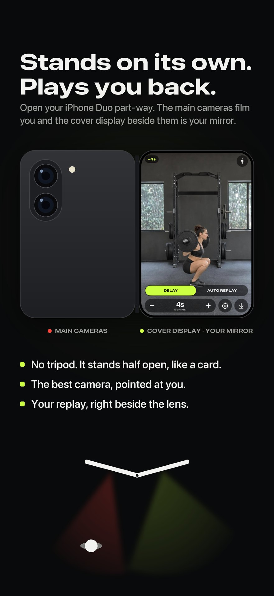
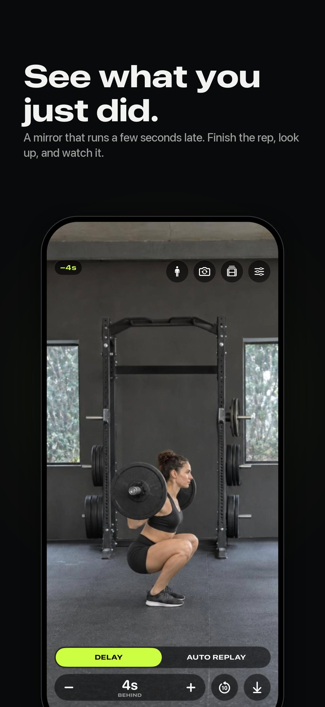
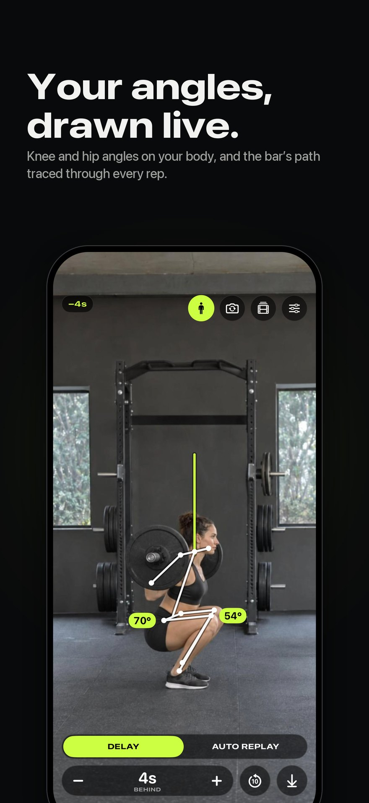
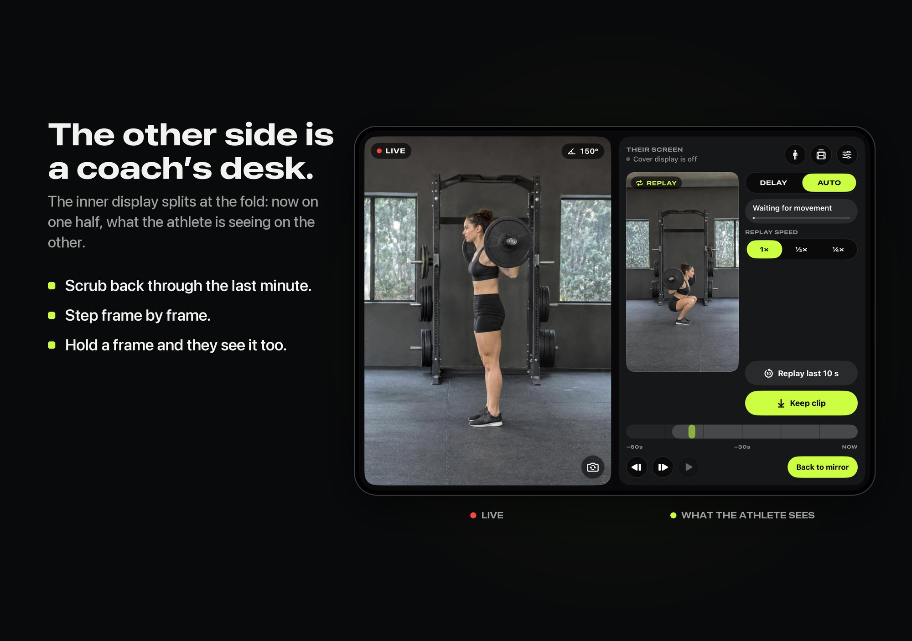

Aftersight is a mirror that runs a few seconds late. Finish the rep, look up, and watch what you just did.
Video delay is an old coaching tool: a camera, a screen, and a few seconds between them, so an athlete can see a movement right after feeling it. It normally takes a tripod and a second screen, or a phone propped against a water bottle with its weaker camera facing you. iPhone Duo is the first phone that can do the whole job by itself, and Aftersight is built around that.
What it does with iPhone Duo
The cover display is the mirror
Stand the Duo half open like a greeting card. The main cameras film you, and the cover display right beside them plays you back late. It uses the camera capture scene accessory new in iOS 27.1.
The inner display is a coach's desk
Split at the fold: live on one half, what the athlete is seeing on the other, with the last minute to scrub through and step frame by frame.
The hinge is the stand
A stance guide reads the hinge angle and shows how far the screen is turned from where the cameras are looking.
Also
Auto Replay loops your last effort by itself when you stop moving. A skeleton overlay draws knee and hip angles on your body and traces the bar's path, using Vision on the device. Kept clips can be compared side by side and measured with line and angle tools. It also works as a one-screen delay mirror on any iPhone with iOS 27.1 or later.




Facts
| Released | 16 November 2026, version 1.0 |
|---|---|
| Price | Free. Aftersight Pro is a one-time purchase (US$9.99), shared with Family Sharing. No subscription, no ads. |
| Free | Delay from 1 to 10 seconds, instant replay, scrubbing and frame stepping, three kept clips, line and angle tools, and everything Duo-specific: the cover mirror, the desk, the stance guide. |
| Pro | Auto Replay, skeleton with angles and trace, ½× and ¼× replays, unlimited clips, side-by-side comparison, delays up to 60 seconds. |
| Requires | iPhone with iOS 27.1 or later. Designed for iPhone Duo. |
| Languages | English, Turkish |
| Privacy | No account, no analytics, no audio. Video stays in memory on the phone and is written to storage only when you keep a clip. Privacy policy |
| Made by | An independent developer. Contact — reviewers and creators can ask there for a Pro code. |
Images
Free to use in coverage of the app. The person in the pictures is computer-generated; the app screens are real.